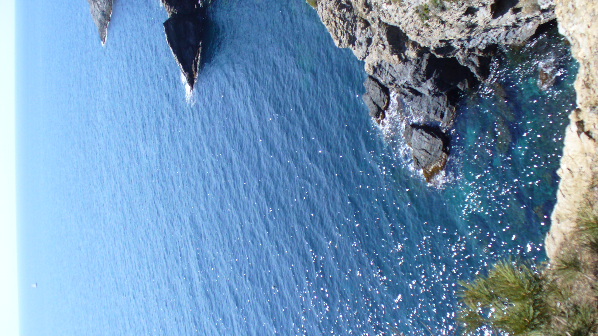

Affiliation
We are part of the Physics and Engineering for Living Systems department of the Centre Interdisciplinaire de Nanosciences de Marseille (PIV/CINAM) , located at the Luminy campus in Marseille, France.
We also belong to the Turing Centre for Living Systems (CENTURI), an interdisciplinary centre aimed at developing an integrated scientific community to decipher the complexity of biological systems through the understanding of how biological function emerges from the organisation and dynamics of living systems.

Address
CINaM - UMR 7325
CNRS - Aix Marseille Université
Campus de Luminy – Case 913
13288 MARSEILLE Cedex 09
